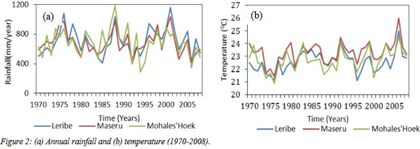

December 2017
Foreword
Lesotho intends to unconditionally lower her net Greenhouse Gas emissions (GHG) by 10% by 2030 relative to a business as usual (BAU) scenario emission of 5.713 Metric tonnes of Carbon dioxide equivalent (MtCO2e). An additional 25% GHG emission reduction is attainable on condition that external support (finance, investment, technology development and transfer, and capacity building) is made available to cover the full cost of implementing the adaptation and mitigation actions. With the external support, a combined total emission reduction of 35% below the BAU emission levels can be achieved by 2030.
Nowwithstanding her minimal contribution to the climate change phenomenon, Lesotho accepts the need to contribute to the global mitigation effort and is aware of the need for her emphasis to be placed on adaptation. Lesotho also intends to undertake numerous adaptation initiatives to enhance resilience and reduce vulnerability of her population, environment and economy to the adverse impacts of climate change. This can be achieved by mainstreaming climate change adaptation into national development policies, strategies,and plans in line with the country's social priorties and National Adaptation Programme of Action of 2007.
Lesotho's Nationally Determined Contribution (NDC) is an improved version of the Intended Nationally Determined Contribution (INDC) which Lesotho presented to the United Nations Framework Convention on Climate Change (UNFCCC) in September 2015. The country is adopting a two-fold strategy against climate change. Firstly, the main focus is on activities which increase the country's resilience and adaptive capacity to the impacts of climate change. In fact, climate change effects are already adversely affecting the livelihoods of the majority of Lesotho's population in a significant way and may continue to deteriorate unless drastic measures are taken to fight and mitigate climate change. Secondly, Lesotho is transitoning to low-carbon and more climate resilient development pathways. Effectively,the NDC aims to put forth adaptation and mitigation actions that Lesotho will take to tackle its growing vulnerability to climate change dnd GHG emissions. In pursuance of Article 2 of The Paris Agreement, this will contribute towards achieving the global long-term goal on adaptation and efforts to limit global average temperature to well below 2°C above pre-industrial levels and pursuing efforts to limit the temperature increase to 1.5°C above pre-industrial levels.
The information presented in this submission is based on the data available at the time of preparing this NDC.
Thank you
Hon, Francis Mokoto Hloaele
Minister of Energy & Meterology
| BAU | Business-As-Usual |
| CBO | Community Based Organisations |
| CDM | Clean Development Mechanism |
| CO2 | carbon dioxide |
| CO2eq | carbon dioxide equivalent |
| EE | Energy Efficiency |
| GDP | Gross Domestic Product |
| GEF | Global Environment Facility |
| GHG | Greenhouse Gas |
| GNA | Global Needs Assessment |
| INDF | Interim National Development Framework |
| INDC | Intended Nationally Determined Contributions |
| IPCC | Intergovernmental Panel on Climate Change |
| LDCs | Least Developed Countries |
| LEAP | Long-range Energy Alternatives Planning Systems |
| LREBRE | Lesotho Renewable Energy-Based Rural Electrification |
| LMS | Lesotho Meteorological Services |
| LPG | Liquid Petroleum Gas |
| MRV | Measurement, Reporting and Verification |
| NAPA | National Adaptation Programme of Action |
| NCCC | National Climate Change Committee |
| NDC | Nationally Determined Contributions |
| NSDP | National Strategic Development Plan |
| PRS | Poverty Reduction Strategy |
| RE | Renewable Energy |
| REDD | Reducing Emissions from Deforestation and Forest Degradation |
| SAPP | Southern African Power Pool |
| SHS | Solar Home Systems |
| SWH | Solar Water Heaters |
| SNC | Second National Communication |
| UNFCCC | United Nations Framework Convention on Climate Change |
Lesotho’s geographical characteristics and prevailing socioeconomic conditions among the majority of its rural population make it one of the most vulnerable countries to the impacts of climate change. Current trends in the energy demand coupled with over-reliance on imported fossil fuels by majority of Basotho are patently unsustainable in many fronts – environmentally, socially and economically. Without decisive action, energy-related emissions of carbon dioxide (CO2) will continue to rise. It is therefore imperative for Lesotho to change its current path. Such a change entails an energy revolution with low-carbon energy technologies plying a crucial role together with widespread deployment of various types of renewable energy, carbon capture and storage and new transport technologies. More so, every sector of the economy must be actively involved, if the country is to achieve its GHG emissions reduction targets.
Mitigation has to be achieved in all sectors. Lesotho’s plan to mitigate GHG emissions is built on some of the following pillars:
The NDC has been formulated based on previously submitted INDCs guided by the principle of common but differentiated responsibilities and respective capabilities, as formed by different national circumstances.
Lesotho’s mountainous topography and socio-economic conditions renders it highly vulnerable to adverse impacts of climate change. Geographically, Lesotho is located in the south eastern part of Southern Africa; at approximately 28°S and 31°S Latitude and 27°E and 30°E Longitude. It is landlocked and enclaved by the Republic of South Africa. It occupies a land area of 30,355 km2, a north-south extent of about 230 km and a maximum width of about 210 km, with altitudes ranging from 1,388 m to 3,482 m. The country is divided into four geographical zones of significant climatic and agro-ecological differences, namely: the Lowlands (5,095 km2 or 17%), Foothills (4,529 km2 or 15%), Mountains (18,037 km2 or 59%) and the Senqu River Valley (2,690 km2 or 9%).
Lesotho has a continental temperate climate characterized by four distinct seasons: spring, summer, autumn and winter1. The average temperature ranges between −10°C in winter and 30°C in summer. The country receives most of its rainfall between the months of October to April, with an average of 700 mm per annum2 Precipitation patterns are determined by regional and local climate controls. The lowest average annual precipitation occurs in the Senqu River Valley (450 mm) and the highest in the north-eastern mountain zone (1.300 mm). Precipitation is highly variable both temporally and spatially, thus droughts and floods are common occurrences. High intensity rainfall often produces flash floods that accelerate soil erosion leading to high sediment loads in rivers. Snowfall occurs annually over the mountains and on average once every three years in the lowlands causing serious problems, not only resulting in extremely low temperatures but in restrictions on movement and access to essential services as well as the mountain communities including loss of livestock. Strong winds are common, causing destruction of infrastructure (e.g. houses, power lines, etc.). Lesotho faces challenges such as pasture degradation and desertification, shrinkage of habitats, decrease in the number of plant species and wild life as well as increased frequency and magnitude of climate disasters including drought. Notably, during the period 1979 to 1996 the country experienced the highest incidences of drought in almost 100 years, with the longest drought in the country’s history lasting from April 1991 to October 1995 3. In congruence with studies done by the Intergovernmental Panel on Climate Change (IPCC) and scenarios projected by the Lesotho Meteorological Services (LMS), climate change is already affecting Lesotho’s climatic patterns, aggravating the above climatic attributes and thus causing substantial environmental and socio-economic loss.
Floods and droughts have resulted in severe loss to agricultural crop and livestock resulting in food insecurity implications. The economic impact depends on the extent of the variability and extreme events but droughts alone are estimated to reduce total GDP by 1% - 4%. Soil erosion has been estimated to reduce agricultural GDP by 2%-3% (around 1% of total GDP)4. Even normal variability has a negative economic impact due to the sensitivity of agricultural output to climate. These all equates to a high current vulnerability and economic cost that we must tackle.
The population of Lesotho is estimated at 2 million with an annual population growth rate of 0.08%5. The country is ranked 160/187 on the Human Development index, indicating a low human development, and 57.1% of its population live below poverty line. On the Global Needs Assessment (GNA) Vulnerability Index, Lesotho is ranked 2/3 and on the GNA Crisis Index it scores 3/3, indicating a high vulnerability6. Approximately 75% of the population resides in the rural areas. Almost 50% of the population is unemployed and depends on rain- fed subsistence agriculture for livelihood and lives in chronic poverty. The majority of the population is concentrated in the lowlands resulting in very high population densities. Lesotho is generally characterized by unemployment, poverty, food insecurity, lack of infrastructure, as well as high population pressure on arable land and natural resources. Effectively, the majority of the country’s population does not have adequate adaptive capacity and resilience to climate change, and is thus more vulnerable to the negative impacts of climate change and extreme weather events.
The county’s economy is primarily based on four sectors, namely: water, manufacturing, mining and agricultural. Other significant contributors to the economy are: Customs Duties from the Southern African Customs Union (SACU); benefits accruing from other regional and international trade agreements and protocols; and individual remittances from Basotho working in South Africa.
Water Resources - Lesotho is renowned for an abundant supply of pristine water resources. The country constitutes one of Southern Africa’s principal water catchment areas, capturing around 50% of the total catchment run-off. The water resource base plays a critical role in advancing socio–economic development and supporting ecosystems integrity. Climate change-induced effects on Lesotho are expected to have a far-reaching regional impact on both the national and regional fresh water resources as the country forms major source of fresh water and drainage areas extending into the Atlantic basin through South Africa, Namibia and Botswana. Effectively, the impact will be detrimental to national and regional water dependent life forms, ecosystems and socio-economic activities.
Renewable Energy Resources – Owing to its abundant water resources and topography, high wind speeds as well as extensive annual solar radiation, the country has a huge potential for generation of clean renewable energy. As echoed in the Lesotho Energy Policy 2015 and the Draft Lesotho Renewable Energy Policy 2013, the sector is geared towards harnessing the potential of these resources in advancing sustainable universal energy accessibility and affordability, reducing Greenhouse Gases (GHG) emissions and mitigating the negative impacts of climate change in Lesotho.
Biodiversity Resources - Lesotho lies entirely within the Grassland Biome and is incredibly rich in natural and cultural diversity, with unique habitats and high levels of endemism. These resources play a fundamental role in sustaining Basotho’s wellbeing, particularly for the rural poor and unemployed whose livelihoods depend heavily on rangelands, indigenous plant and animal species, wetlands and ecotourism. Climate change is identified as one of the major threats undermining the resilience and sustainability of these resources with the likelihood of driving them to extinction.
In recent years, Lesotho’s development policies, plans and programmes are mainly guided by Lesotho Vision 2020, currently operationalized through the five-year National Strategic Development Plan (NSDP) 2012/13-2016/17 that is currently being updated to 2021/2022. The NSDP is a strategy that aims to contribute to the broader National Vision 2020. It adopts an integrated, systemic approach and encompasses medium-term economic development, poverty reduction and longer-term sustainable development issues. This planning document also provides detailed guidance on priorities and specific actions to be taken during the planning period, including actions that contribute to longer term development objectives beyond 2017. The document explicitly highlights that there is a potential for energy generation based on renewable sources, provided financial resources are available. The energy sector is regarded as a source of economic growth, climate change mitigation and eventually export revenues. To that end, the strategy articulates the following three goals:
The plan also identifies reversing land degradation, protecting water sources through integrated land and water resource management, improving national resilience to climate change and increasing clean energy production capacity and environment-friendly production methods as some of the main national priorities and strategic goals to reduce poverty and achieve sustainable development. Furthermore, it advocates for improving environment and climate change governance as well as increasing the greening of the economy.
Although Lesotho does not have a climate change policy yet, the country continues to exert visible efforts that amply reflect the increasing importance of climate change issues. Suffice to say, Lesotho is at an advanced stage of finalizing Climate Change Policy and Strategy as well as the Sustainable Energy Strategy to spur climate change activities and provide policy guidance for development of appropriate administrative and legislative framework, in harmony with other sectoral policies for the pursuance of a low-carbon development path. These instruments are being crafted under EU Technical Assistance project titled “Support to the Climate Change Response Strategy to the Kingdom of Lesotho”. The project aims to achieve the following:
Specifically concerning adaptation to climate change, the priorities are outlined in the National Adaptation Programme of Action (NAPA, 2007), which entails the identification of the country’s “urgent and immediate” priority needs so that effective implementation measures may be put into place to combat the adverse effects of climate change. The programme identified eleven adaptation options denoting key adaptation needs that communities need to be supported with in order to sustain livelihoods in view of climate change risks
The vision for the National Energy Policy (2015-2025) is “Energy shall be universally accessible and affordable in a sustainable manner, with minimal negative impact on the environment”. Reducing fossil fuel imports is the major goal, with the uptake of renewable energy along with further energy efficiency improvements on both the demand and supply sides.
In addition to the above-mentioned key climate change related policies, Lesotho has in the recent past developed other environmental and sectoral policies, strategies, projects, programmes and plans that implicitly address climate change issues. These include:
Notwithstanding developments of the above-mentioned policies, climate change has not been adequately integrated in sectoral policies and plans. Cognizant of that, Lesotho intends to utilize existing frameworks, policies, projects and activities that provide mitigation and adaptation co-benefits to conceptualize the elaboration of its NDC. The NDC for Lesotho is consistent with the overall goal of the NSDP which encompasses medium-term economic development, poverty reduction, and longer-term sustainable development.
Lesotho is implementing the Third National Communication (TNC) to the UNFCCC, which will eventually produce updated findings with respect to climate change trends and projected impacts. For now, existing data from the Second National Communication must be used to guide planning for climate change.
Figure 1 shows the Lesotho’s average annual temperatures for the period 1967 to 2006. Though average annual temperature has been highly variable from year to year, an overall increasing trend is observable. The effective increase in Lesotho’s mean annual temperatures over the analysed period was 0.76ºC (giving an average rate of increase of 0.20oC per decade). The trend analysis of temperature over most areas in Lesotho (Fig.2b) shows increase in both annual maximum and minimum temperatures between 1970 and 2005 with minimum temperatures warming more than the maximum temperatures and the most rapid warming occurring in the early 1980s. The mean seasonal temperatures are projected to increase by between 1.78oC and 2.20C by 2060 in many areas of Lesotho7.
Figure 1: Mean annual temperature in Lesotho: 1967 – 2004.
Some of the observed changes in the climate are: slightly decreased annual precipitation; changes in seasonal rainfall patterns – including progressive increase in winter season precipitation accompanied by an opposite trend in the summer season, in some regions; which led to drying out of traditionally perennial springs; and diminishing of normally large rivers along with many dams remaining dry for most of the year. Figure 2 shows a decreasing trend in rainfall and an increasing trend in average temperatures in representative districts for lowlands of Lesotho for the period 1970 - 2005.
Under various climate change scenarios, projections show intensification of these changes in the first half of the 21st century: More recent climate change simulations show temperatures increasing by about 1°C by 2030, 1.5-2.0°C by 2050, and by about 2.5-3.5°C by the 2080s while winter rainfall shows strong decreases, with no change in summer and autumn rainfall, and gradually increasing spring rainfall. The above-mentioned projections will have impacts on different sectors of the economy.
Notwithstanding its minimal contribution to the climate change phenomenon, the Lesotho accepts the need to contribute to the global mitigation effort but is aware of the need for its emphasis to be placed on adaptation. Lesotho’s capacity to undertake and sustain strong mitigation actions is dependent upon support for the implementation of the cross-cutting adaptation actions described in this document. For Lesotho’s NDC, the adaptation options considered as top priority are those that will permit the higher co-benefits with respect to climate change mitigation, particularly those good adaptation practices and techniques which will permit carbon sequestration and reduction of GHG emissions at the same time. These adaptation options have already been well defined in the existing strategic frameworks, such as the National Adaption Programme of Action (NAPA) 2007. The country’s NAPA identify agriculture, energy, water, forestry, gender, infrastructure and human health as sectors and thematic areas which are highly vulnerable to the impacts of climate change, climate variability and extreme climate events.
The vulnerability is further compounded by a number of other factors, including high levels of poverty particularly in rural areas, the scattered nature of rural settlements, which makes the provision of and access to social services difficult. For instance, climate-sensitive rain-fed agriculture is the mainstay of Lesotho’s agro-based economy. It accounts for 7% to 10% of the GDP (down from 25% in the 1980s), furthermore, up to 80% of Lesotho's population engage in some form of agriculture related activity.
One of the guiding principles is to develop and implement integrated adaptation and mitigation solutions that are cost-effective, improve energy efficiency, promote cleaner production, and provide adaptation/mitigation synergies as well as economic, environmental and socioeconomic benefits. Hydroelectricity has great potential in providing clean energy, an opportunity to reduce GHG emissions and also meet other objectives such as flood, irrigation and water supply management. Forestry based actions will not only increase the amount of GHG sinks, but will also provide adaptation co-benefits contributing to prevention of flooding, soil erosion and landslides, protection of biodiversity and ecosystem services and recovery of degraded land. The rural electrification programme will reduce GHG emissions, promote rural development local entrepreneurship, reduce poverty, reduce rural exodus through job creation, strengthen social cohesion, improve education and health, improve access to new information and communication technologies and energy equipment and alleviation of women’s domestic duties.
To guide the adaptation process, seven sectoral vulnerability and adaptation assessments were completed under the country’s Second National Communication to determine the vulnerability profile and identify possible adaptation interventions and options. In addition, eleven adaptation projects were identified by the NAPA 2007 and ranked in order of priority as follows:
Many of the actions have strong synergies with mitigation actions. Table 1 shows current, on- going and planned adaptation undertakings
Table 1: Strategies for Agriculture (crops and livestock), Forest and Land Rehabilitation Program
| Project name | Implementation State | |
|---|---|---|
| Complete /On-going | Planned | |
| Developing capacity for climate change adaptation capacity in the agricultural sector | 2009 – 2011 | |
| Conservation agriculture: advocacy, extension / training, research integration into formal curricula | 2005 to date | |
| Sorghum breeding for high yield and drought tolerance | 1996 to date | |
| High efficiency irrigation systems: Gravity & Drip | 1995 to date | |
| Increasing Capacity for Climate Change Adaptation in the Agriculture Sector | 2008-2019 | |
| Lesotho Climate Change Adaptation of Small-Scale Agricultural Production | 2011-2017 | |
| Smallholder Agriculture Development Project – Cropping Systems | 2011-2017 | |
| Adopt improved agricultural systems for both crops and livestock | 2020-2030 | |
| Implement strategies for improved resource management | 2020-2030 | |
| Lesotho wool & mohair improvement project | 2015-2022 | |
| Lesotho Block Farming Initiatives | 2005 to date | |
| Smallholder Agriculture Development Project – Livestock | 2011-2017 | |
| Land Rehabilitation Program | 2005 to date | |
| Mechanism to Implement the Forestry Initiative for Landscape and Livelihood Improvement Program | 2015-2016 | |
| Forestry Initiative for Landscape and Livelihoods Improvement Program | 2015-2016 | |
| Strengthen the implementation of the national Community-Based Forest Resources Management Programme | 2020-2030 | |
| Support review and implementation of the National Forest Policy. | 2020-2030 | |
| Develop and maintain a frequent forest inventory system to facilitate monitoring of forest status; and initiate a research programme on a range of climate change-related topics | 2020-2030 | |
| Provide extension services to civil society organizations, communities and the private sector to help establish and restore community and private natural forests, plantations and nurseries. | 2020-2030 | |
For Lesotho to attain enhanced adaptive capacity and resilience to the negative impacts of climate change there is urgent need for the provision of finance, capacity building and technology. These also underscore the need for research support in climate change adaptation. Sectorally, there are inadequate adaptation capabilities for data collection, processing and provision in the Energy, Agriculture, Land Use, Land Use Changes and Forestry, Health and Water sectors. Consequently, there is need to:
Table 2 shows examples of vulnerable sectors and adaptation options planned, the majority of which are conditional on the availability and provision of appropriate technology.
Table 2: Summary of adaptation actions: Conditional (CC), Unconditional (UC) Capacity Requirements (CR), Technology Requirements (TR) and Finance Requirements (FR)
| Sectors | Intended policy based action | Provision of implementation means | ||||
|---|---|---|---|---|---|---|
| CC | UC | CR | TR | FR | ||
| Agriculture | Diversify livestock; improve range management; increase access to drought resistant crops and livestock feeds; adopt better soil management practices; provide early warning/meteorological forecasts and related information. | ✔ | ✔ | ✔ | ✔ | |
| Increase use of irrigation systems that use low amounts of water; increase rainwater and sustainable ground water harvesting for use in agriculture; increase planting of native vegetation cover and promotion of re-greening efforts; and intensify crop and livestock production. | ✔ | ✔ | ✔ | ✔ | ||
| Build adaptation capacity in climate resilient agronomic practices for smallholder farmers | ✔ | ✔ | ||||
| Promotion of climate-smart agriculture (Agrometeorology) | ✔ | ✔ | ✔ | |||
| Support an expanded programme of constructing multipurpose dams for irrigation and aquaculture | ✔ | ✔ | ✔ | ✔ | ||
| Promote innovations in post-harvest storage and food processing | ✔ | ✔ | ✔ | ✔ | ||
| Promote the growing of drought-tolerant and heat-tolerant crop varieties and hardy livestock | ✔ | ✔ | ✔ | |||
| Implement conservation agriculture and agroforestry practices | ✔ | ✔ | ✔ | ✔ | ||
| Adjustment of planting dates and crop variety; crop relocation; improved land management, e.g. erosion control and soil protection through tree planting | ✔ | ✔ | ||||
| Water | Implement integrated catchment conservation and management programme | ✔ | ✔ | ✔ | ✔ | |
| Expanded rainwater harvesting; water storage and conservation techniques; water re-use; water-use and irrigation efficiency | ✔ | ✔ | ||||
| Support an expanded programme of constructing multipurpose dams to enhance water storage | ✔ | ✔ | ✔ | ✔ | ||
| Support the revision of water related policies and strategies (including LHDA) | ✔ | ✔ | ✔ | ✔ | ||
| Establish a national integrated water resource management framework that incorporates district and community-based catchment management; | ✔ | ✔ | ✔ | ✔ | ||
| Human Health | Build capacity to diagnose, prevent and control climate-sensitive diseases such as diarrheal diseases and malnutrition | ✔ | ✔ | ✔ | ✔ | |
| Enhance public awareness about water, sanitation and hygiene practices; and enhance health surveillance | ✔ | |||||
| Support expanded programme for preventing and controlling climate- sensitive diseases | ✔ | ✔ | ✔ | ✔ | ||
| Construct more health centres in order to improve access to health facilities within a walking distance of 8 km | ✔ | ✔ | ✔ | |||
| Support the establishment of centre of excellence for research and disease control targeting climate-sensitive diseases | ✔ | ✔ | ✔ | ✔ | ||
| Energy | Promote energy mix that moves people away from use of biomass | ✔ | ✔ | ✔ | ✔ | |
| Construct storage dams for hydropower generation | ✔ | ✔ | ✔ | ✔ | ||
| Expand afforestation and forest regeneration programmes | ✔ | ✔ | ✔ | |||
| Promote growing of drought tolerant and fast growing tree species | ✔ | |||||
| Strengthen the implementation of the national Community-Based Forest Resources Management Programme | ✔ | ✔ | ✔ | ✔ | ||
| Develop and maintain a frequent forest inventory system to facilitate monitoring of forest status; and initiate a research programme on a range of climate change- related topics | ✔ | ✔ | ✔ | ✔ | ||
| Gender (and vulnerable groups) | Promote gender mainstreaming in policies, programmes and projects | ✔ | ✔ | ✔ | ||
| Support capacity building programmes for vulnerable groups | ✔ | ✔ | ||||
| Infrastructure | Construct infrastructure for flood control,transport, etc. | ✔ | ✔ | ✔ | ✔ | |
| Develop and implement climate related building codes/standards | ✔ | ✔ | ✔ | ✔ | ||
| Revise existing building standards in line with climate change | ✔ | ✔ | ✔ | ✔ | ||
| Environment | Management and Reclamation of Degraded and Eroded Land in the Flood Prone Areas | ✔ | ✔ | ✔ | ✔ | |
| Biodiversity and ecosystems | Conservation and Rehabilitation of Degraded Wetlands in the Mountain Areas | ✔ | ||||
| Promote conservation and regeneration of biodiversity | ✔ | |||||
| Enhance regulatory protections for species potentially at risk due to climate changes | ✔ | |||||
| Preserve natural forest cover to maintain biodiversity and ecosystems | ✔ | ✔ | ✔ | ✔ | ||
| Support and implement programmes for alternative livelihoods in order to reduce unsustainable resource use that contributes to loss of biodiversity | ✔ | ✔ | ✔ | ✔ | ||
| Tourism | Strengthening and stabilizing ecotourism based rural livelihoods | ✔ | ||||
| Identify and assess tourism areas that are vulnerable to Climate Change and provide support to planners and policy makers in selecting appropriate policies and adaptation strategies that meet climate adaptation, developmental and environmental goals. | ✔ | ✔ | ✔ | ✔ | ||
| Climate change adaptation research and capacity building in the tourism-recreation sector | ✔ | ✔ | ✔ | ✔ | ||
| Increase the preparedness of tourism and recreation operation to extreme weather conditions. | ✔ | |||||
| Land use | Integrated approach to Sustainable Land Use Planning and Management | ✔ | ✔ | ✔ | ✔ | |
| Promote improved land use practices | ✔ | |||||
| Culture | Protection and conservation of indigenous and endangered species | ✔ | ||||
| Establishment of botanical gardens | ✔ | ✔ | ✔ | ✔ | ||
| Train heritage professionals to plan for climate change | ✔ | |||||
| Provisions from various areas of environmental act (heritage conservation, pollution, land use, construction, water, environmental impact assessment, and planning law) must be used in an integrated way with the aim of mitigating and adapting to the effects of climate change on heritage properties. | ✔ | |||||
| Cross cutting | Conduct risk assessments and vulnerability mapping | ✔ | ✔ | ✔ | ✔ | |
| Establishment of an integrated early- warning system, and disaster response plans | ✔ | ✔ | ✔ | ✔ | ||
The mitigation targets are set against a Business As Usual (BAU) projection and consider emissions reductions in 5 sectors: (1) Energy, (2) Industrial Processes, (3) Agriculture (livestock and soil), (4) Land-Use, Land-Use Change and Forestry (LULUCF), and (5) Waste. The plan to mitigate GHG emissions is built on the following: Improving crop and livestock production practices for food security while reducing emissions; Protecting and re- establishing forests for their economic and ecosystem services, while sequestering CO2; Expanding electric power generation from renewable energy; Improving access to modern and energy efficient technologies in transport, industry and building sectors.
Lesotho mitigation potential will largely depend on its national circumstances. While national efforts are underway and will continue to be exerted toward emission reduction, external support (cost effective technology, capacity building and adequate financial support) is a pre- requisite to achieving the emissions reduction targets set out in this NDC.
The graph below represents the trajectory of Lesotho’s conditional and unconditional contribution for the period 2020 - 2030

Figure 3: Trajectory of Lesotho’s conditional and unconditional contribution for the period 2015-2030 (using GACMO model)
The basis for the calculation of the emission reduction is the projection of GHGs from the 2000 inventory using the GACMO model (2015). The GACMO model was also used to calculate the abatement potential and corresponding investment requirement. Further analysis and periodic updating will be necessary to refine the required investment cost and determine the domestic support.
| Type of targets: | Emission reduction from projected emissions for the year 2030 as compared to BAU scenario |
| Coverage: | Country wide |
| Gases covered: | Carbon dioxide (CO2), Methane (CH4) and Nitrous Oxide (N2O) Fluorinated gases are not covered; they are rarely used in Lesotho and their emissions are marginal? |
| Sectors covered: | Energy |
| Energy production | |
| Energy demand (households, transport, industry, services agriculture) | |
| Agriculture | |
| Enteric fermentation and Manure management | |
| Cropping systems | |
| Land use for agriculture | |
| Industrial Processes | |
| Cement Industry | |
| Other Industries | |
| Waste | |
| Solid waste | |
| Waste water | |
| LULUCF | |
| Natural forests | |
| Afforestation and Reforestation | |
| Forest fires | |
| BAU Scenario | GHG emissions projections for 2030 starting in the base year 2000 do not take into account mitigation measures and actions implemented from base year 2000. |
| Mitigation Scenarios |
|
All the efforts being undertaken by the Government to achieve GHG mitigation objectives are reflected in the National Energy Policy, Draft Renewable Energy Policy and Climate Change Policy and Strategy documents. Through these instruments, Lesotho is committed to ensuring protection of the environment through reduction of GHG emissions by its energy sector as well as preventing other related environmental damages; enhancing its energy security by reducing reliance on fossil fuels and imported electricity; and promoting use of cleaner energy sources and technologies. To that end, Lesotho will, inter alia, undertake the following actions:
On a very positive note, the Government of Lesotho, with the cooperation of its developmental partners has made significant strides in the implementation of mitigation measures. Notably, with the technical and financial support of GEF, the Government, developed and implemented the Renewable Energy-Based Rural Electrification (LREBRE) Project across the country – which is still on going. Inter alia, the LREBRE aims to reduce the country’s energy-related CO2 emissions by promoting renewable and low GHG emission technologies as substitutes for fossil fuels prevalently utilized in the country’s rural areas. This project is particularly viewed as success story, as a total of 1,537 SHS with a capacity of 65 W each have been installed since its inception, while a minimum of 500 other SHS have also been independently installed as a result of the project’s influence. On the other hand, our state-owned electricity company, Lesotho Electricity Company (LEC), continues to address demand-side-management challenges through conducting public awareness campaigns on the efficient use of electricity. Furthermore, the LEC also focus its efforts on minimizing technical losses and elimination of non-technical losses of energy.
On the basis of the energy initiatives surpassing the originally envisaged targets, in 2012 Lesotho significantly revised its electrification access targets upwards. The 2015 target was increased from 35% to 40%, the 2020 target shifted from 40% to 50%, and the 2030 target to 60%. The ambitious targets aim to achieve better access to clean energy for lighting, heating and cooking across the country, and concomitantly address the overarching global issues.
In addition to the above highlighted projects, the Government of Lesotho is currently implementing various other projects, with the key ones shown in Table 3. The majority of these projects primarily aim to support investment in electricity supply, to enhance electricity access rate, to improve energy utility efficiency, and ultimately assist the country in reducing poverty and achieving the Sustainable Development Goals and simultaneously meets its unconditional contribution with regard to GHG emissions.
Table 3: Summary of mitigation measures under implementation (with the assistance from Development Partners)
| Development Partner | Project | Description |
|---|---|---|
| Global Alliance For Clean Cook-stoves | Global Alliance For Clean Cook-stoves: |
|
| EU | Support to Climate Change Response Strategy |
|
| Support to Reform in the Energy Sector |
|
|
| Austrian Development Cooperation | Southern African Solar Thermal Training and Demonstration Initiative |
|
| World Bank Group / Strategic Climate Fund | Scaling Up Renewable Energy Program (SREP): |
|
| UNDP/GEF | Development of Cornerstone Public Policies and Institutional Capacities to Accelerate SE4ALL Progress |
|
| Government of Italy | Implementation of MOU in the Field of Climate Change Vulnerability, Risk Assessment, Adaptation and Mitigation |
|
| AfDB | Urban Distribution Rehabilitation and Transmission Expansion Project |
|
| 20MW Solar Facility |
|
|
| BADEA | Rural Electrification Project |
|
Furthermore, the unconditional mitigation scenario is also based on the implementation of actions listed below, while the conditional scenario assumes the implementation of all actions over the period 2015-2030. Various scenarios for mitigation of GHG emissions have been assessed. From the quantitative assessment using LEAP and qualitative assessment using the screening matrix comprising; potential for large impact on GHGs, consistency with national development and environmental goals, sustainability data availability criteria, it was found that the most promising and realistic mitigation options include, but are not limited to:
| Global Warming Potential (GWP): | |||
| The GWP values used are based on the IPCC according to the UNFCCC Decision 17/CP.8 for the compilation of greenhouse gas inventories: | |||
|
Global Warming Potential (CO2) = 1 (by Convention) (CH4) = 21 (N2O) = 310 Emissions of GHGs not listed are negligible. |
|||
| Methodology for Estimating Emissions: | |||
| The 2000 GHG emissions were completed following 1996 IPCC Guidelines, national statistics, sector activity and economic forecasts. The BAU and mitigation scenarios were developed for all sectors using the “Long-range Energy Alternatives Planning Systems” (LEAP) software. | |||
| Methodology for Estimating Emissions from Agriculture, Forestry and other Land-Use Sectors: | |||
|
|||
| Summary of key data regarding the mitigation scenarios (all gases) | |||
|---|---|---|---|
| 2000 | 2020 | 2030 | |
| Emissions, BAU (ktCO2eq) | 2,355 | 4,822 | 5,713 |
| Emissions, Unconditional (ktCO2eq) | 2,355 | 4,332 | 5,142 |
| Emissions, Conditional (ktCO2eq) | 2,355 | 3,653 | 3,737 |
This contribution is based on analysis carried out throughout 2015 using the best available data. However data quality and availability is a challenge in Lesotho. Should new and more robust data come to light in future and/or if assumptions change (e.g. projections of population or economic growth) the Government will update its analysis accordingly. This will be coordinated and embedded within the National Communications and Biennial Update Reports reporting cycle.
The demand for RAC products and appliances in Lesotho is continuously growing. The current and presumably future drivers of demand are, namely:
A potential future additional driver is the increasing level of electrification – especially given various ongoing government initiatives in the energy sector, such as the Rural Electrification Programme. The growing use of RAC appliances leads to increasing GHG emissions due to the two following key reasons:
The resulting indirect emissions can be significantly reduced through the implementation of modern technologies, increasing energy efficiency and by decarbonizing the energy supply. Direct emissions can be reduced by replacing F-gases with natural refrigerants (CO2, ammonia, hydrocarbons and water) as they have no or negligible GWP. Phasing down F- gases, in particular HFCs, presents a high GHG mitigation potential.
High energy consumption and the direct emissions generated when using refrigerants with a high global warming potential (GWP) means the RAC sector impacts significantly on the volume of GHGs produced. The large GHG mitigation potential in the RAC sector lies in transitioning from the highly climate-damaging hydrochlorofluorocarbons (HCFC) and hydrofluorocarbons (HFC) to alternatives with low Global Warming Potential (GWP) values in a timely manner. Furthermore, the transition to low GWP refrigerants can also yield additional benefits. Some co-benefits are energy and cost savings (through improved energy efficiency) and employment creation (safe handling of systems that use natural refrigerants requires skilled, educated, and qualified technicians to install, operate, and maintain the systems). The training of technicians creates additional employment and allows for safe, efficient handling of RAC appliances. Reduction in energy consumption will also contribute towards Lesotho’s national energy security.
Notably, the RAC sector is currently addressed by the activities outlined in the HCFC Phase- out Management Plan (HPMP), ODS Regulations 2012 which came into force in 2012 to specifically deal with the enforcement and strengthening of ODS controls, and the on-going development of Hydrocarbons servicing and retrofitting safety guidelines. Lesotho has successfully implemented its targets under Stage I of its HPMP and is currently preparing for the implementation of Stage II.
Lesotho’s NDC includes both an unconditional and conditional contribution. The unconditional mitigation measures will be achieve by Government budget by mainstreaming the NDC initiatives into existing development programmes and scheduled or in-progress projects, all of whose funding has been defined including those under implementation. The conditional contribution assumes the provision of sufficient and timely international support in the form of finance, investment, technology development and transfer, and capacity building.
According to BAU scenario, by 2030 the CO2 emissions will be more than double (increasing from 2,355 kCO2eq to 5,713 kCO2eq). However, the implementation of the measures proposed in the mitigation scenario (as listed in Table 4 and 5), the emissions are estimated to 34.6% less than the BAU scenario 2030 predictions.
Table 4: Key Sectorial Strategies and Targets for the Implementation of Lesotho’s Mitigation Contribution
| Sector | Key Mitigation Activities | Targets |
|---|---|---|
| Energy (Electricity) Policy/Strategy Document: (Energy Policy 2015 – 2025) |
|
|
| Transport Policy/Strategy Document: (Transport Policy 2014) |
|
|
| Buildings (Residential, Commercial and Institutional) |
|
|
| Waste Management |
|
|
| Agriculture |
|
|
| Forestry: |
|
|
To achieve its conditional mitigation contribution, Lesotho may need to pursue some additional critical mitigation interventions as identified by stakeholders, and summarised in Table 5. Effectively, additional and improved mitigation measures may be identified in the future. In that case, more analysis will be undertaken to evaluate these options in more detail vis-à-vis the availability of funding support and internal capabilities.
Table 5: Proposed additional mitigation action-based contributions: Conditional (CC), Unconditional (UC), Capacity Requirements (CR), Technology Requirements (TR) and Finance Requirements (FR).
| Sectors | Intended policy based action | Provision of implementation means | ||||
|---|---|---|---|---|---|---|
| CC | UC | CR | TR | FR | ||
| Energy Supply and utilization | Scale up the SWH from approximately 1,000 in 2015 to 5,000 by 2030 | ✔ | ✔ | ✔ | ✔ | |
| Promote solar PV and use of energy efficient bulbs | ✔ | ✔ | ||||
| Scale up SHS from approximately 5,000 in 2015 to 10,000 by 2030 for lighting in urban and selected non-electrified rural households | ✔ | ✔ | ✔ | ✔ | ||
| Increase generation of hydroelectricity from 75 MW to 125 MW by 2030 | ✔ | ✔ | ✔ | ✔ | ||
| Installation of 10 solar PV mini-grids in rural communities with an average capacity of 100 kW each, which translates to 1 MW | ✔ | ✔ | ✔ | ✔ | ||
| Attain utility scale solar electricity installed capacity of up to 40 MW | ✔ | ✔ | ✔ | ✔ | ||
| Attain utility scale wind power capacity of up to 35 MW | ✔ | ✔ | ✔ | ✔ | ||
| Scale up adoption of LPG in peri-urban and rural households by 2030. | ✔ | ✔ | ✔ | ✔ | ||
| Scale up access and adoption of efficient cook-stoves by 2030 | ✔ | ✔ | ✔ | ✔ | ||
| Industry and Industrial Processes | Develop national standards for alternative building materials and technologies; | ✔ | ✔ | ✔ | ✔ | |
| Develop a Code of Practice for Refrigeration and Air Conditioning | ✔ | ✔ | ✔ | ✔ | ||
| Promote research in industrial technologies | ✔ | ✔ | ✔ | ✔ | ||
| Efficient lighting; more efficient electrical appliances and heating and cooling devices; improved insulation; passive and active solar desig for heating and cooling; alternative refrigeration fluids, recovery and recycling for fluorinated gases; | ✔ | ✔ | ✔ | ✔ | ||
| Agriculture | Develop appropriate extension and training materials for climate resilient agronomic practices | ✔ | ✔ | ✔ | ||
| Upscale the dissemination of climate resilient agronomic practices | ✔ | ✔ | ✔ | ✔ | ||
| Forestry and land-use | Support research in drought tolerant and fast growing tree species | ✔ | ✔ | ✔ | ✔ | |
| Upscale afforestation, reforestation and forest conservation and protection of catchments | ✔ | ✔ | ✔ | ✔ | ||
| Upscale sustainable production of fuel wood by establishing woodlots plantations and forest management | ✔ | ✔ | ✔ | ✔ | ||
| Waste | Landfill CH4 recovery; waste incineration with energy recovery; composting of organic waste; controlled wastewater treatment; recycling and waste minimisation; | ✔ | ✔ | ✔ | ✔ | |
| Promote solid and water waste reduction practices at household, institutional and industry level to reduce waste generation | ✔ | ✔ | ✔ | |||
| Process municipal solid wastes into fertilizers | ✔ | ✔ | ✔ | ✔ | ||
| Transport | More fuel-efficient vehicles; Improving efficiency and emissions from existing vehicles through standards and capacity building | ✔ | ✔ | ✔ | ✔ | |
| Consider measures to restrict importation of vehicles that do not adhere to allowable emissions levels. | ✔ | ✔ | ✔ | ✔ | ||
| Cross-cutting | Developing a robust national GHG inventory, a credible baseline and emissions trajectory, and a comprehensive MRV system. | ✔ | ✔ | ✔ | ✔ | |
The process of implementing the NDC is an opportunity to build institutional and technical capacities, stimulate policy integration and promote inclusive development. The national institutions necessary to implement the NDC programmes exist. The Ministry of Energy and Meteorology (MEM) is the coordinating agency charged with the responsibility of monitoring and reporting on weather, climate and climate change issues. In addition, MEM is the UNFCCC focal point. It coordinates the country’s actions on climate change through the (NCCC) that was formally established in 2013. The Committee is a multi-stakeholder forum chaired by the Ministry. It also serves as platform for information sharing on climate change issues in the country. The Ministry will function as the main body to monitor implementation of climate change adaptation projects, and identify emerging gaps and opportunities for further action.
Lesotho’s NDC is an ambitious, fair and responsible contribution to global efforts towards meeting the objective of the UNFCCC and the goal of limiting global average temperature rise to below 2.0°C. The country’s proposed targets are ambitious, despite its status as a very vulnerable, small and landlocked least developed country with a fragile mountainous ecosystem and numerous pressing social and economic development needs and priorities. In order to maximise the ambition of its mitigation contribution while taking into account the need for economic development, Lesotho has prioritised mitigation actions that both address the main causes of future increases in emissions and also have significant development co- benefits. Therefore, we submit that these nationally determined contributions are fair and equitable commensurate to the national circumstances especially its low GDP per capita (≈ US$1,126) and the level of dependence on external support. Though Lesotho’s GHG emissions represent only 0.005% of global emissions and net per capita emissions, inclusive of all sectors, were 1.1 tCO2eq in 2015, it is highly vulnerable to climate change, particularly in the agriculture, energy and water sectors and has already experienced extreme weather shifts.
Monitoring and evaluation (M&E) is crucial for effective and efficient implementation of climate change adaptation activities at the national level. For all government programmes and projects implemented in the country, a monitoring and evaluation framework is in place. The M&E activities are undertaken by the Ministry of Development Planning (MoDP) in collaboration with sectoral ministries. The NDC M&E will be done by the MP, MEM and other sectoral ministries. LMS and NCCC will function as the main bodies to monitor implementation of climate change adaptation programmes/projects. Furthermore, the LMS and NCCC will identify emerging gaps and opportunities for further action. Government of Lesotho will require external technical and financial support to institute a tailor-made NDC tracking system to monitor short, medium and long term implementation.
To achieve national resiliency to climate change, the NSDP has outlined the following strategies:
Despite these noble aspirations, currently, the country does not have a long term national adaptation plan. Thus, there is an urgent need for financial support to complement the on- going adaptation initiatives. There is also a need to develop a long-term national adaptation plan and research.
Lesotho faces a number of specific challenges in terms of addressing climate change. These challenges include, but are not limited to:
The impacts of climate change are more severe on sections of the society that are main dependant on natural resources for livelihoods and/or who have the least capacity to respond to natural hazards, such as droughts, landslides, floods and hurricanes. The majority of the world’s poor are women, as such they face higher risks and greater burdens from the impacts of climate change. Furthermore, women’s unequal participation in decision-making processes and labour markets compound inequalities and often prevent women from fully contributing to climate-related planning, policy-making and implementation.
The need to ensure equal engagement of women and men in all processes of the Convention as well as the need to develop and implement gender-responsive national climate change policies (which respond to the differentiated needs, experiences, priorities and capacities of women and men) is endorsed by the UNFCCC and enshrined in the Paris Agreement which states as thus: “Parties should when taking action to address climate change, respect, promote and consider their respective obligations on human rights, the right to health, the rights of indigenous peoples, local communities, migrants, children, persons with disabilities and people in vulnerable situations and the right to development, as well as gender equality, empowerment of women and intergenerational equity".
In line with the aforementioned, Parties have to: a) Improve gender balance and increasing the participation of women in all UNFCCC processes, including in delegations and in bodies constituted under the Convention and its Kyoto Protocol, and b) Increase awareness and support for the development and effective implementation of gender-responsive climate policy at the regional, national and local levels.
To this effect the adaptation interventions proposed in this NDC are meant to a) recognize and respond to the differentiated needs, experiences, priorities and capacities of women and men; b) enhance gender balance and inclusiveness in various adaptation programmes and projects.
The Lesotho’s NDC is aligned with the national development goals, monitoring of SDGs and anchored in the National Energy Policy, forthcoming National Climate Change Policy and Strategy as well as the Sustainable Energy Strategy. It was developed though an inclusive and participatory process involving stakeholders who were engaged under the SNC processes, to provide inputs into the development of the GHG Inventory and Mitigation Assessment chapters and then through a validation exercise to seek national support for the proposed measures and targets. The effort received considerable technical support and guidance from UN Environment (UNEP) Technical University of Denmark (DTU) Partnership.
The NDC reflects the most recent data and information, analysis, and scenario for possible future. As a developing country, Lesotho will likely experience dynamic changes due to national and global economic changes. In this regards, the NDC will be reviewed and adjusted, as necessary, taking into account national circumstances, capacity and capability, and the provision under the Paris Agreement.
Future research will be conducted in order to:
http://www.enviropedia.org.uk/Climate/Temperate_Climate.php, assessed on 22 August 2017
IPCC 5th Assessment Report (2014); Working Group II Impacts, Adaptation and Vulnerability: http://ipcc-wg2.gov/AR5/
McSweeney, C., New, M. & Lizcano, G. (2010); UNDP Climate Change Country Profiles: South Africa. http://country-profiles.geog.ox.ac.uk.
Ministry of Energy, Meteorology and Water Affairs, Lesotho (2013); Second National Communication of Lesotho to the UNFCCC; http://unfccc.int/resource/docs/natc/lsonc2.pdf.
Ministry of Natural Resources, Lesotho (2007); National Adaptation Programme of Action (NAPA); http://unfccc.int/resource/docs/napa/lso01.pdf.
Strategic Investment Programme 2014 – 2024 Programme Document. Maseru. GoL.
Lesotho Meteorological Services(a). (2013). Climate of Lesotho. Retrieved August 10, 2017, from Lesotho Meteorological Services Web Site: http://lesmet.org.ls/cimatology/climate-lesotho↩︎
Government of Lesotho (GoL), 2012. National Strategic Development Plan 2012/13 – 2016/17. Maseru. GoL.↩︎
Chakela, Q.K. (ed.), 1999. State of the environment in Lesotho 1997. Maseru: National Environment Secretariat, Ministry of Environment, Gender and Youth Affairs.↩︎
Expert judgment from discussions with experts from Ministry of Agriculture and food Security, Central Bank of Lesotho, National University of Lesotho ↩︎
Bureau of Statistics, 2011 Lesotho Demographic Survey, Government of Lesotho, 2011. http://www.bos.gov.ls/↩︎
UNDP, 2016. Human Development Report 2016↩︎
Dejene A., S. Midgley, M.V. Marake and S. Ramasamy. 2011. Strengthening Capacity for Climate Change Adaptation in Agriculture: Experience and Lessons from Lesotho. Food and Agriculture Organization of the United Nations. Blue Book Series.↩︎
Note: Data given above are subject to changes and update and Lesotho has the right to make necessary changes relating to the baseline an mitigation scenario in light of any up-to-date data by 2020↩︎